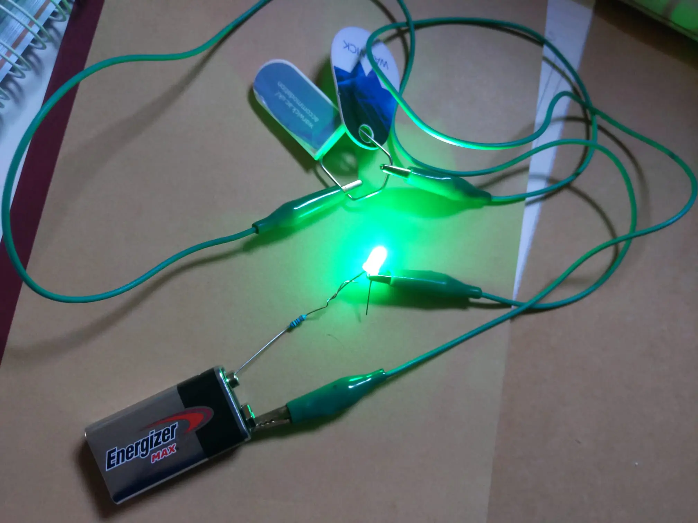
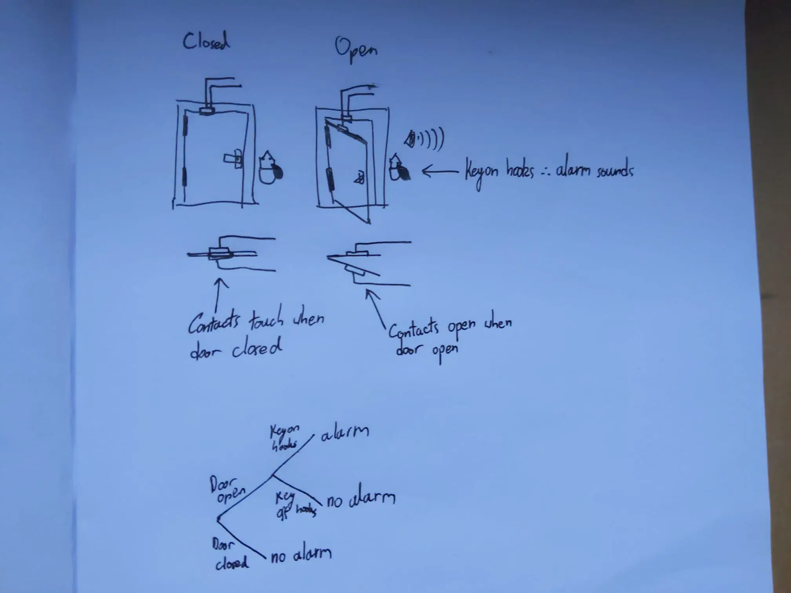
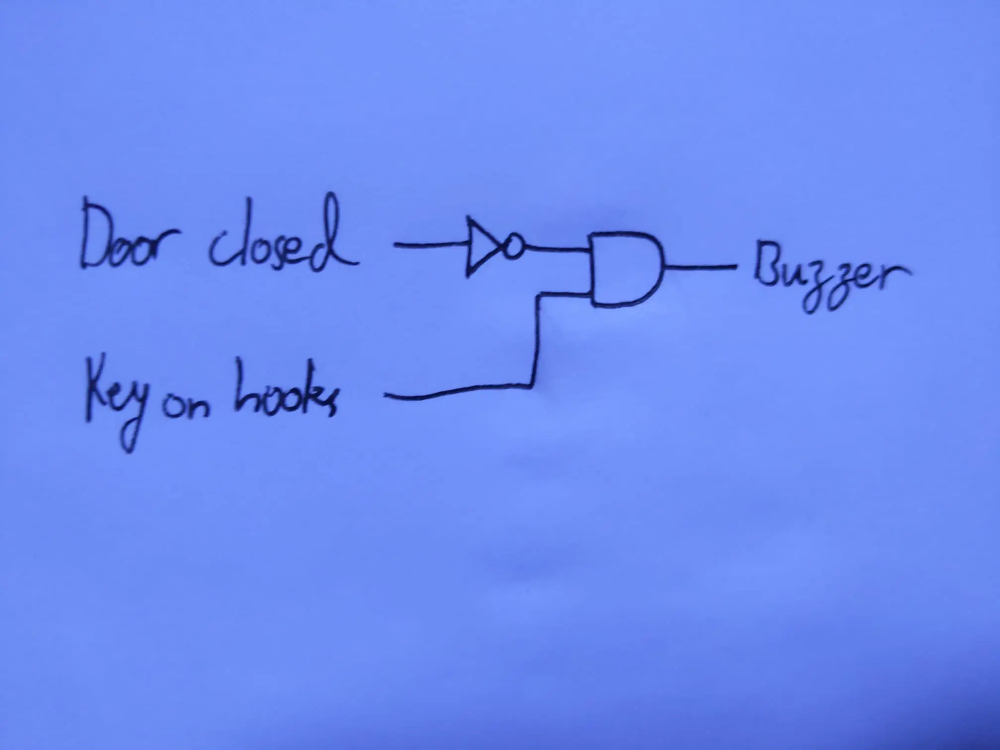
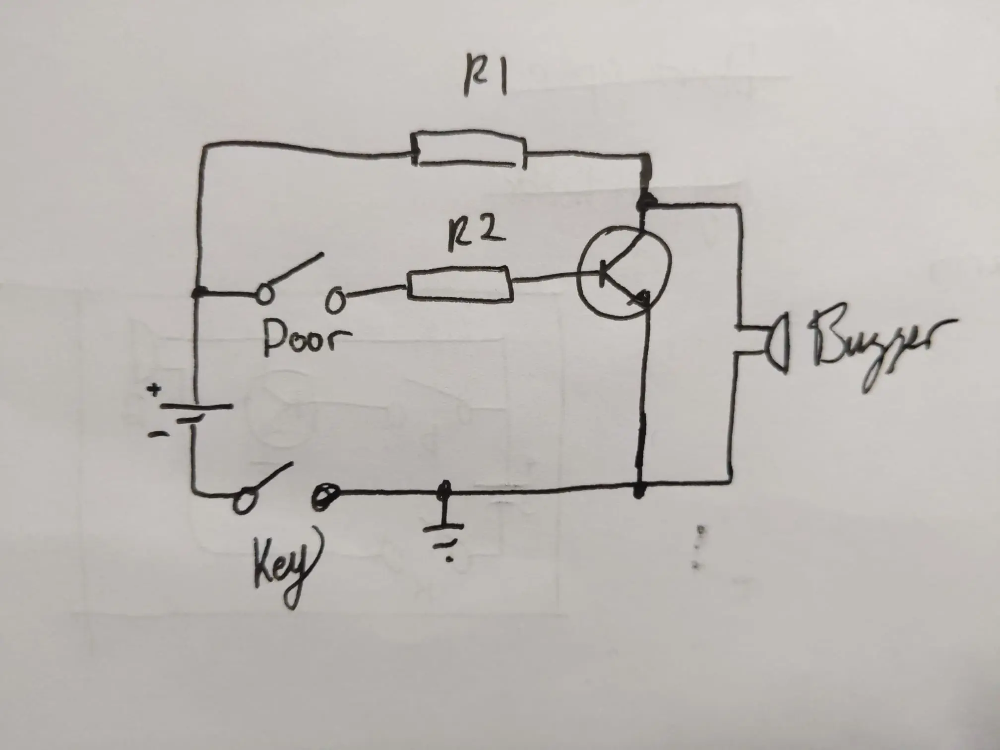
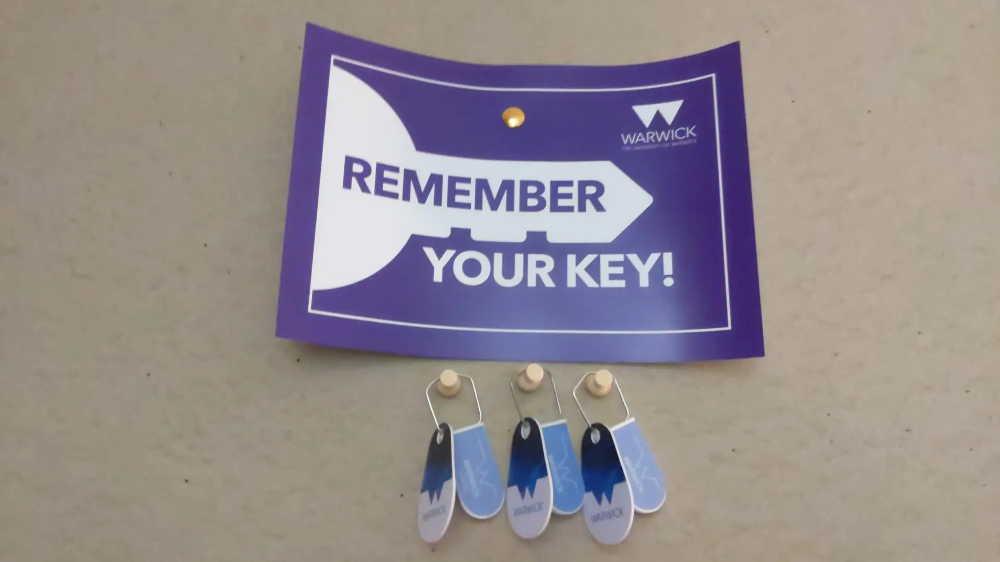
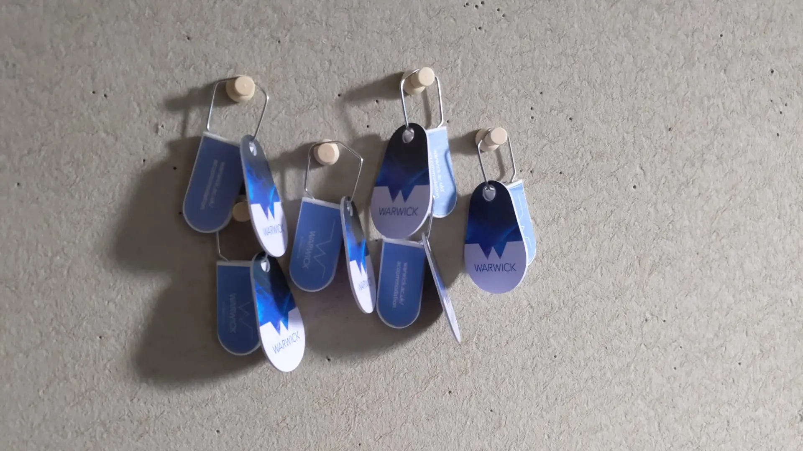
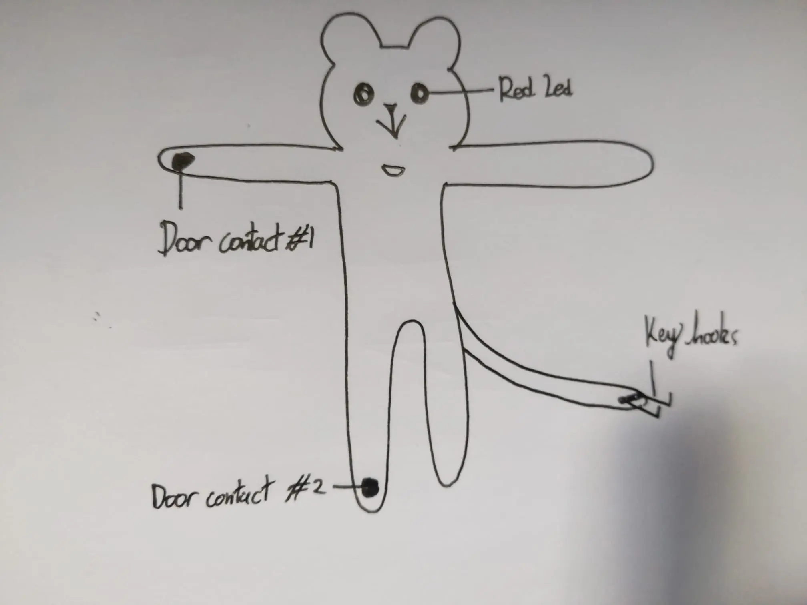
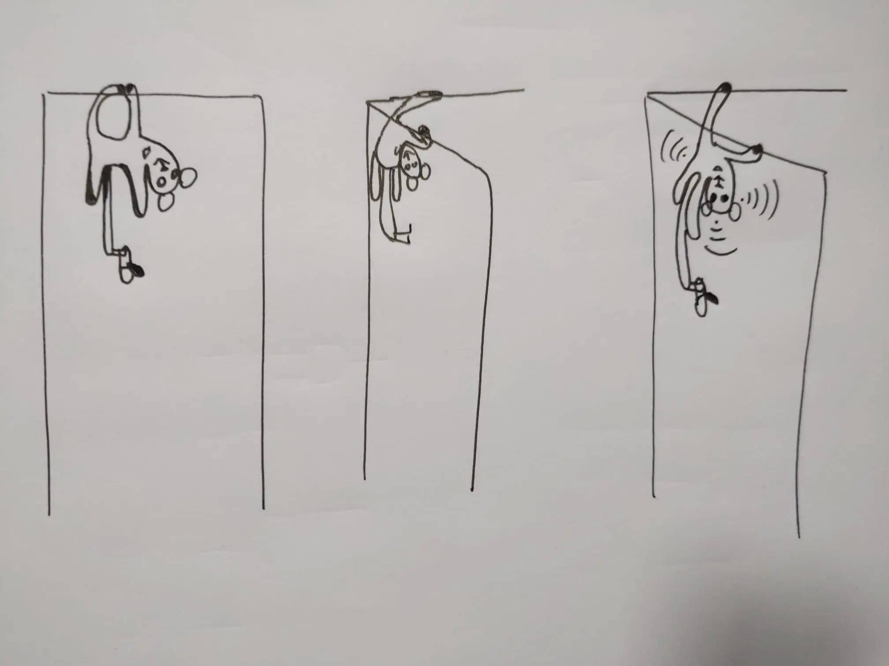

Posts tagged "university":
How not to remember your room key
During my first year at university, I found myself like so many others, in student accomodation. Specifically, I was in the Westwood campus flats, notorious at Warwick for being much further away from main campus than any other available accomodation.
This was not typically an issue for me, for so do I enjoy walking, but from time to time …maybe more times than I care to admit, I would find myself walking back after a long day's work, having trudged there and back again to Life Sciences at the opposite end of campus, it's cold and dark and raining, and I'm ready to warm up indoors, have a restful night's sleep and …where is my key?
So then I have to go back out in the rain, by now pitch black and freezing outside, all the way over to the far end of central campus to acquisition a new key. And this was a perilous journey with the crossing lights seemingly perpetually broken. But I make it in the end, get my new key, and finally drag myself back to my flat once more, soaked and tired, and lo! Indoors, is warm and cosy, and who do I find perched so obnoxiously on my desk, grinning a snide, silver smile like a Cheshire cat? Why my old key of course!
So after the 16th time (I counted) I decided I should probably do something about it.

Brainstorming
To begin with I came up with a few ideas:
Clone my key and keep the spare in my wallet.
This would have been a fairly straightforward solution, if not for the fact that doing so would apparently have been against the terms of my accomodation. The keys are quite simple NFC tags so should be trivial to duplicate, but I decided to look into other options.
Lead a string under my door attached to the handle, so that I could pull the string to open the door from the inside.
This would have compromised the security of my room somewhat, although I doubt that anyone would have tried to use it, in fact my flatmates were generally all honest, trustworthy people. But alas, it was not ideal.
Prevent myself from forgetting the key in the first place.
This was the ideal solution, but… how?
Looking at my key, (after another day of such absentmindedness…), and at its sinister silver sheen, I wondered if the ring might be conductive.

And so it was, thus spawning a new idea - I could use the key as a connection between two contacts. And when the door is opened while the contacts remain connected, an alarm would sound to let me know that my key is still there.
Design

For the door contacts, my first instinct was to have a buzzer in series with a battery, then have the contacts in parallel with the buzzer, such that when the doors close, the buzzer would be shorted and no longer sound.
I realised however that this would be constantly shorting the battery which would be a massive waste of electricity, and not to mention potentially unsafe. So at that point I felt I may as well have used a microcontroller, since I'm generally much more comfortable at a higher level of abstraction (computer scientist as I am). But this again felt pointlessly wasteful.
And it felt like it should be a relatively simple electronic circuit - in logic gates it would be something like:

Which in theory I could make using logic gate chips such as the 74HC04, as I had done in my computer architecture labs before, but it again felt that there should be a more efficient solution.
And it was around this time that I was conveniently introduced to the magic of transistors in one of my electronics lectures, allowing me to draw up this little circuit here:

Where with appropriate component values there should be minimal current flowing through the circuit when idle.
So… I built it (apologies for poor quality video):
And it worked, perfectly. Which is odd because normally things take some trial and error before they do. But it worked.
Results
Sadly, for the 2 weeks I had the device installed atop the door, I found that in reality I forgot my key more times by leaving it in my jacket, and then leaving my jacket in my room. So the device would assume that I had the key, when in actuality it was still in the room, and not on my person.
And besides which, apparently having a beeping tangle of wires above your door looks a lot like a bomb. Who knew? Residential services certainly did…


Improvements
I believe the main issue was that there was no interaction required using the key to leave the room, ie. I didn't need to pick up the key to leave the room.
So instead a better solution would be to require you to tap the key on the contacts before you leave, which would provide you with a grace period of about 10 seconds where you can open the door without the alarm sounding.
I imagine it would be fairly straightforward to adapt the current circuit to use a simple time delay circuit with a few resistors and capacitors, should such a device seem useful to you. Potentially also an enclosure of some description (I had also considered sewing a sock monkey around all the cables, with the feet holding the door contacts, and the key hooks at the end of the tail. Maybe add a red LED in the eyes).

